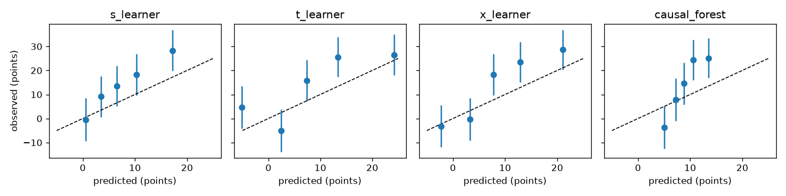
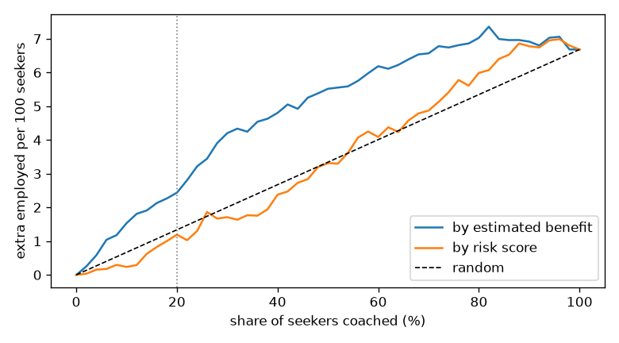

On the logs, regression with 60 controls gives 13.5 points with a narrow interval; cross-fitted DML gives 10.8 points with a wider one. The DML robustness value is 8.5%. What do you report?
The regression estimate, because its interval is narrower
The average of the two estimates
The DML estimate, its interval and its robustness value
Nothing: the robustness value shows the effect may be zero
Why. DML allows the nonlinear confounding the regression cannot follow, and the robustness value tells the director how strong a hidden factor would have to be.
Where heterogeneous effects are learnt
A randomised pilot removes confounding, so every remaining problem is noise
A lottery within each office: the propensity is 0.5 for everyone.
Any group fixed before the lottery can be compared directly.
6,000 seekers, a binary outcome: individual effects are never seen, and groups are noisy.
Real programmes
Job-search programmes show effects that differ by person; Knaus, Lechner and Strittmatter (2022) estimated them with machine learning on Swiss administrative data.
Any classifier, three ways
Meta-learners turn a prediction model into an effect estimator
S-learner
One model μ(x, t); effect μ(x,1) - μ(x,0).
T-learner
Two models, one per arm; effect μ1(x) - μ0(x).
X-learner
Impute each seeker's effect with the other arm's model, then model the imputed effects.
S-learner
One model with coaching as a feature tends to shrink effects towards zero
m = clone(BASE).fit(np.column_stack([Xtr, ttr]), ytr)
one = np.column_stack([X, np.ones(len(X))])
zero = np.column_stack([X, np.zeros(len(X))])
tau_s = m.predict_proba(one)[:, 1] - m.predict_proba(zero)[:, 1]
What goes wrong. Regularised trees split on the strongest predictors of employment. Coaching is one column of nineteen; effects that differ by seeker need splits on coaching inside each branch.
T-learner
Two separate models subtract their errors, and the difference looks like heterogeneity
What it does well
Lets each arm have its own shape; nothing forces effects to be small.
What it gets wrong
Each model fits noise in its own arm; their difference adds the two noises.
10.5 vs 10.1
spread of T-learner effects against the truth (points, sd)
X-learner
The X-learner models imputed effects, which are smoother than outcomes
1 · T-learnerμ1, μ0
→
2 · Imputey - μ0(x) for the coached, μ1(x) - y for the others
→
3 · Modelτ1, τ0 on the imputed effects
→
4 · Blende·τ0 + (1-e)·τ1
In a lotterye = 0.5: the two halves count equally. With unequal arms, the imputations made with the larger arm's model count more.
Lab 2.1, 2,400 held-out seekers
Against the generator's truth, the X-learner made the smallest error
Learner
Error (PEHE)
Correlation
Mean
Spread
S-learner
8.0
0.65
7.6
6.1
T-learner
8.9
0.64
8.5
10.5
X-learner
7.0
0.74
8.5
8.4
Truth
9.9
10.1
Points of employment within six months. Error and correlation need the truth; real data give you only the last two columns.
Checkpoint
Why might the S-learner report almost no difference between seekers?
A colleague's S-learner on the pilot gives nearly the same effect, about 8 points, for every seeker. The trial was 1:1 and large. What is the most likely reason?
Coaching truly has the same effect for everyone
Confounding in the pilot has flattened the effects
The pilot is too small for any learner to find differences
Trees seldom split on coaching, so its interactions shrink
Why. The S-learner's regularisation treats coaching like any other feature; differences in effect need interactions with it, which shallow, regularised trees often leave out.
The causal forest's idea
A causal forest splits where the effect changes, not where the outcome changes
A prediction tree
Splits on months unemployed because employment falls with it.
A causal tree
Splits on months unemployed only if coaching works differently on each side.
Two ingredients
Local centring removes the outcome level; honesty keeps the splits from grading themselves
Local centring
Residualise y and t on x first, as in DML, so splits chase effects, not levels.
Honesty
Half of each subsample picks the splits; the other half estimates the leaf effects.
EconML, as one example
CausalForestDML fits the nuisance models and the forest in one call
Interchangeable. grf for R is the reference implementation; CausalML offers uplift trees. The concepts carry over.
Lab 2.2, feature importances
Months unemployed, distance and age drive most of the variation in effects
Months unemployed0.23
Distance to office0.20
Age0.14
Risk score0.10
Prior wage0.09
Share of split importance, causal forest on the training split. The top five are the same with another seed.
Lab 2.2, held-out seekers
The effect peaks for seekers unemployed about a year; the forest sees the shape but flattens it
Forest (solid) against the generator's truth (dashed). Right: forest effect by digital skills, in points.
What not to say
A driver of effect variation is a description, not a lever
"Distance matters" does not mean moving seekers closer would raise the effect.
Correlated covariates share importance: risk score and months unemployed.
A zero importance may mean a correlated column took the splits.
Say who gains more, and stop there until a trial tests a change.
Checkpoint
What does honesty protect against?
An analyst grows a causal tree on all 3,600 training seekers and estimates each leaf's effect on the same seekers that chose the splits. What goes wrong?
Leaf effects are inflated by the noise that chose the splits
The splits follow employment levels rather than effects
The estimates are confounded by who was coached
The fit takes twice as long as it needs to
Why. A split search finds the cut where the observed difference is largest, noise included; estimating on the same seekers reports that noise as effect.
The problem
Individual effects are never observed, so an effect model cannot be scored seeker by seeker
No row has both outcomes: the usual test set metrics do not exist.
Groups do have observable effects, if the groups were randomised.
So validation compares groups defined by the prediction with their observed effects.
Held out and randomised
2,400 pilot seekers the models never saw, coached by the same lottery.
Check 1 · Calibration by group
Sort by prediction into five groups and compare predicted with observed effects

Held-out pilot, five groups of about 480 seekers; bars are 95% intervals. Dashed: perfect calibration.
Check 2 · The best linear predictor
Regress an unbiased effect score on the prediction: a slope near 1 means right in scale
Estimator
Slope
Standard error
Reading
S-learner
1.35
0.31
Signal; slightly timid
T-learner
0.86
0.18
Signal; slightly overconfident
X-learner
1.20
0.23
Signal; close to calibrated
Causal forest
3.14
0.62
Signal; far too timid
Check 3 · Ranking where the budget cuts
Every effect estimator's top fifth gained more than twice what the risk score's did
X-learner28.4
S-learner28.1
T-learner26.7
Causal forest25.1
Risk score11.5
Observed effect in each ranking's top fifth, held-out pilot, points. Each has a standard error near 4.4.
The choice
Choose the estimator that ranks well and is right in scale, and say what the truth showed afterwards
Chosen: X-learner
Top fifth 28.4 points; slope 1.20; quintiles rise in order.
Then the truth
Smallest error (7.0) and true top-fifth gain of 20.8 points, against 21.0 for the forest.
What goes wrong. Validating on the training seekers: every flexible estimator looks calibrated on the data it fitted.
Checkpoint
What does a best-linear-predictor slope of 3 tell you?
On held-out randomised seekers, an estimator's predicted effects range from 5 to 14 points and its best-linear-predictor slope is 3.1 (standard error 0.6). What do you conclude?
The estimator has no useful signal
It ranks well, but real differences are about three times larger
It exaggerates differences between seekers
Its average effect is three times too small
Why. The slope scales differences around the mean: each point of predicted difference brings about three points of observed difference.
Lab 2.4, held-out pilot
The top tenth by estimated benefit gained 33 points; by risk, 5
Share coached
10%
20%
30%
50%
100%
By estimated benefit
33.4
25.1
28.6
22.7
13.5
By risk score
4.6
11.5
11.7
13.2
13.5
Observed effect among the top share, in points. Causal forest predictions; at 100% both rankings coach everyone.
The whole ranking at once
The Qini curve of estimated benefit stays above random; the risk score's hugs the line

Extra employed per 100 seekers in the population, when the top share is coached. Dotted line: one place in five.
From a rank to a rule
Offer coaching when the estimated benefit is at least 11.6 points
11.6
points: the threshold that selects one seeker in five
Next year's seekers arrive one at a time; a threshold decides each.
Watch the share above it: if it drifts from 20%, the population changed.
Observed effect above it on the held-out pilot: 25.2 points.
If the agency switched
84% of the places would go to different seekers, and about 117 more per thousand places would find work
84%
of the benefit fifth is not in the risk fifth
21.0
true gain, benefit fifth (points)
9.3
true gain, risk fifth (points)
Who loses a place. Most of the risk fifth: the long-term unemployed and the least qualified. Day 4 asks whether that is acceptable, and audits it.
Checkpoint
What does a Qini curve check?
An estimator's Qini curve lies well above the random line at every share. Which claim does that support?
Its predicted effects are correct in size
It will rank next year's seekers just as well
Its top seekers gain more than a random pick would
No other ranking could do better at any budget
Why. A Qini curve measures how the ranking concentrates the effect; it says nothing about the scale of the predictions or about other rankings.
Day 2 recap
Effects per seeker are estimated, then validated on randomised data, then turned into a threshold
Estimate
S, T, X and a causal forest; regularise hard on a small pilot.
Validate
Calibration by group, the best linear predictor, the top fifth, on held-out seekers.
Target
Qini curves and a threshold; 84% of places would change hands.
Tomorrow · Day 3
Evaluating rules before using them
Tomorrow you value current practice and three candidate rules on 40,000 logged decisions with inverse propensity and augmented estimators, find the estimates you should not believe, and review an analyst's subgroup claim.